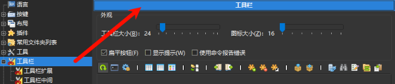
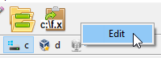
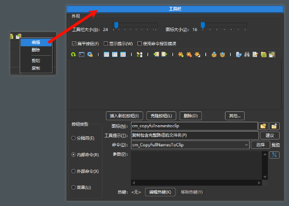
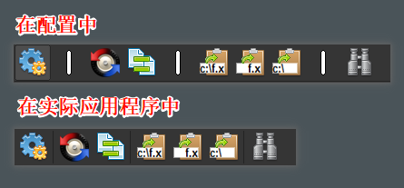
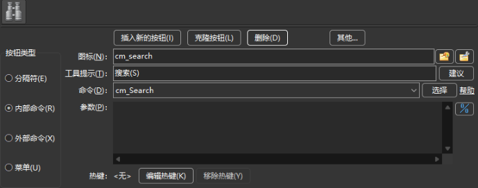
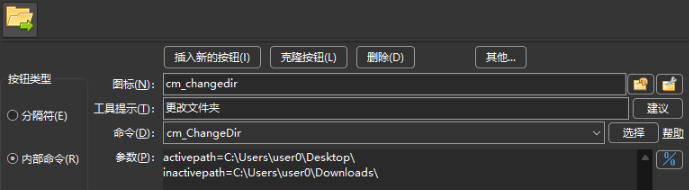
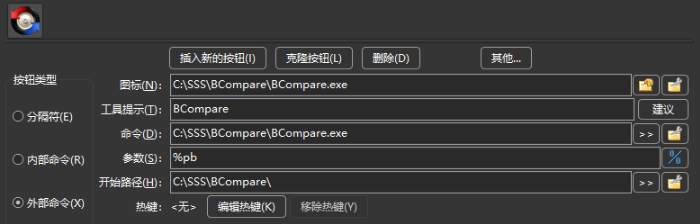
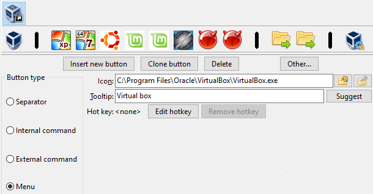

在像 Double Commander 这样的双面板文件管理器中，经常需要直接从管理器中启动常用应用，而不是去桌面、任务栏或开始菜单寻找快捷方式。
对于常做的任务尤其如此。
工具栏的设计目的是允许用户在工具栏中自定义按钮，以便快速访问常用功能。
Double Commander 还支持根据当前显示/选定的文件传递各种参数，从而将这些参数作为启动外部应用的参数。
下面是默认安装后显示在文件面板上方的 DC 默认工具栏。别担心：你可以按照自己的需要和喜好对其进行配置。
中间工具栏也可用，它位于两个文件面板之间。中间工具栏的功能和配置过程与主工具栏类似。
下面列出工具栏中可能包含的元素：
| 工具栏中可能的元素 | |
|---|---|
| 元素 | 说明 |
| 用于在工具栏中以竖线分隔，将相似功能或相似上下文的按钮分组。 | |
| 调用 Double Commander 内部的命令。 | |
| 启动外部应用、可执行文件、脚本等。 | |
| 配置以菜单形式显示的工具栏子项（点击后下拉显示子工具栏）。 | |
要配置工具栏中的内容，需要进入配置界面进行设置。
我们可以打开 Double Commander 的主配置窗口，在左侧栏中选择“工具栏”来访问相关配置。

另一种快速进入配置的方法是在工具栏空白处右键单击，然后选择 编辑。

熟悉工具栏后，也可直接在某个按钮上右键，这不仅会打开工具栏编辑器，还会直接准备编辑该按钮关联的操作。

此外，右键菜单允许删除选中按钮、剪切或复制到剪贴板，或从剪贴板插入按钮。
我们还可以在不打开设置窗口的情况下更改工具栏元素顺序：按住 Shift 键并拖动按钮即可。
分隔符本身没有实际功能，主要用于美观和将相关的按钮分组。
可用的样式如下：
分隔线 – 简单的竖线（中间工具栏为水平分隔）。
空间 – 添加一个空白空间，其宽度等同于按钮的宽度。
在菜单中，无论选择哪种样式，都会使用第一种显示方式。
下面的示例中，使用分隔符将与比较相关的功能、与剪贴板相关的功能等分组显示。

内部命令是由 Double Commander 直接执行的操作，无需调用外部程序。
命令种类非常多。请参阅专门简介内部命令的 页面。
例如，如果我们希望工具栏按钮用于启动搜索，只需在命令下拉框中选择 cm_Search 即可。
如下图所示，可以为其选择自定义图标，但一般只选择命令即可，命令通常已有内置图标。
工具提示 用于在鼠标悬停时显示简短说明，帮助记忆该按钮的功能。
下面是使用 cm_Search 命令的示例：

部分内部命令支持参数以配置其行为。需要时，在参数框中填写参数即可：大多数参数应以 parameter=value 的形式添加（如无特殊说明），每个参数单独占一行，不要使用引号或其他转义方式。
下面示例中，使用内部命令 cm_ChangeDir，并提供两个参数以指示在每个面板中加载并显示的目录。

外部命令用于需要调用外部程序的操作。
对于外部命令，可以设置更多选项，以便精确配置要启动的命令、启动目录，以及（如需）传递给命令的参数。
“命令”字段仅填写可执行文件（原样，无需引号）：可以只写文件名或写完整路径，也可以使用 环境变量。
关于参数，可以使用变量，这些变量会根据当前活动面板中选中文件等替换为实际值。有关可作为参数使用的变量，请参见 此页面（注意 引号的使用）。在终端中运行命令时，可使用变量 %t0 和 %t1。
下面示例中，我们将某个工具栏按钮设置为启动 BCompare，并使用 %pb 作为参数，这表示点击按钮启动 BCompare 时，会将 两个面板，从左到右 中选中文件的完整文件名作为参数传递。

如果不需要显式指定工作目录，则可将“开始路径”留空，此时工作目录将为当前活动文件面板的目录。此处可使用 %D 变量、%d 变量或 环境变量 。
当配置大量工具栏按钮时，可能无法在同一水平线上显示所有按钮。
为便于添加更多按钮，可以使用一种特殊的按钮类型，点击后会在按钮下方弹出下拉菜单，类似于以菜单形式展示的子工具栏。
参见下面示例，我们添加了“菜单”类型的按钮。
这会在下方显示一个子工具栏，我们可以在其中添加指向不同任务的新按钮。
该方式也有助于将与同一项目或相同领域相关的按钮分组。
示例中的子工具栏包含与虚拟机中不同操作系统相关的功能。

下面显示了配置后的子工具栏在应用中的显示方式：

以这种方式配置的子工具栏可以包含先前简介的相同类型的按钮。
甚至可以在子工具栏中再嵌套子工具栏，依此类推。
在应用中这将以菜单元素的子菜单形式显示。
下面给出一个示例：